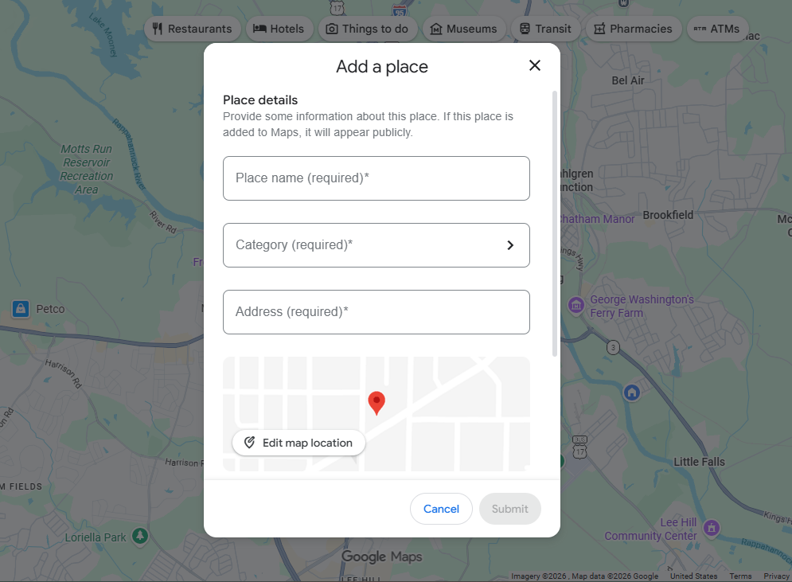
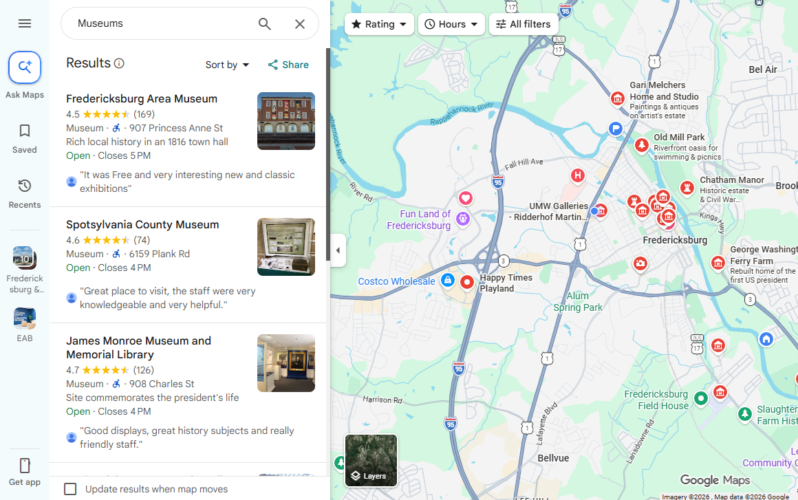
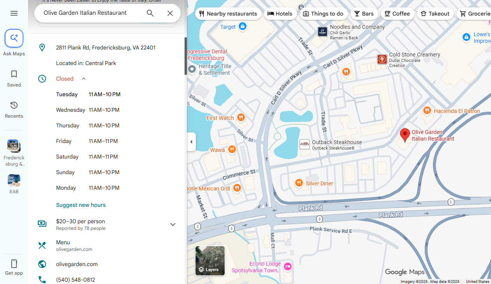
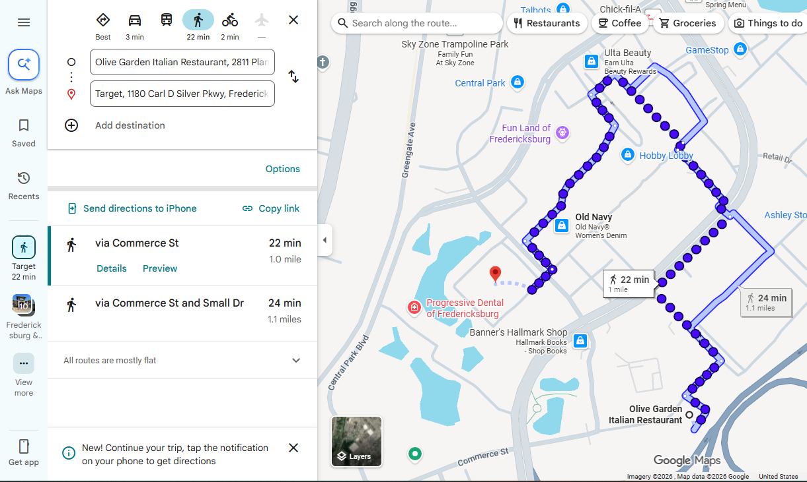
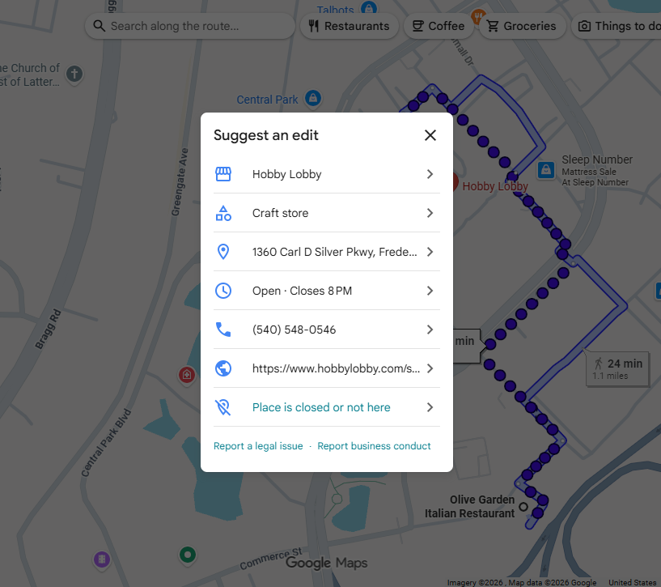

View the results of the test subject's and then try it for yourself!

Find where you can add a location of your choice
Test subject subject #1 found the "Add a place" area fairly quickly. While test subject #2 had asked questions and gave attitude when I didn't help him. Then he found it when I gave him a hint.
Find the closest museum and the exact distance
Subject #1 and #2 had found the closest museum and the distance easily. The museum being the Fredericksburg Area Museum, 1.1 miles.
Find the closest Olive Garden and what time it closes
Subject #1 had mildly quickly. While subject #2 had struggled with finding the closest Olive Garden. Although, found out what time it closes really quickly.
Find how long it would take to walk from Olive Garden to Target
Subject #1 and #2 easily found the nearest to the Olive Garden, which was a mile to walk from the Olive Garden to the Target.
Try to correct a name of a place on Google Maps
Subject #1 and #2 had found the button to "Suggest an edit" quickly. Subject #1's ending time was 6:28 since there was some issues at the beginning. While subject #2's ending time was 4:44.Rate your experience using Google Maps (1 = Disagree, 5 = Agree)
Your Usability Score